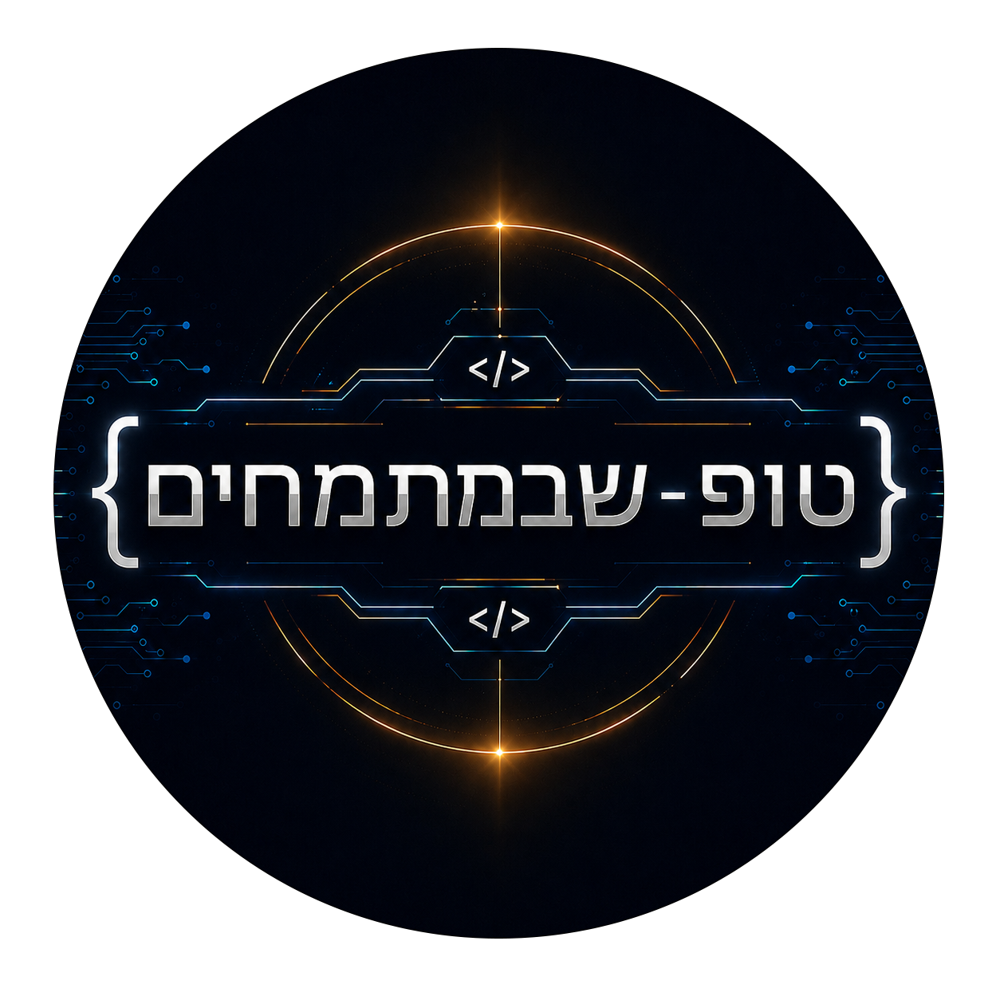

ברוכים הבאים!!!

לפרופיל שלי במתמחים טופ:
הפרוייקטים שלי:

מעצב הודעות צ'אט
סקריפט מתקדם לפורומי נודביבי שמוסיף כפתורי עיצוב נוחים, קישורים, תמונות וספוילרים ישירות לצ'אט הפרטי.
LINK CLEANER PRO
תוסף דפדפן שמנקה אוטומטית קישורים עם כוכביות ופותח אותם תקינים בלשונית חדשה.
CONVERTOP
תוכנת המרה מקצועית וקלילה שתומכת ב-PDF, Word, וידאו, אודיו ותמונות עם ממשק גרפי מרהיב.